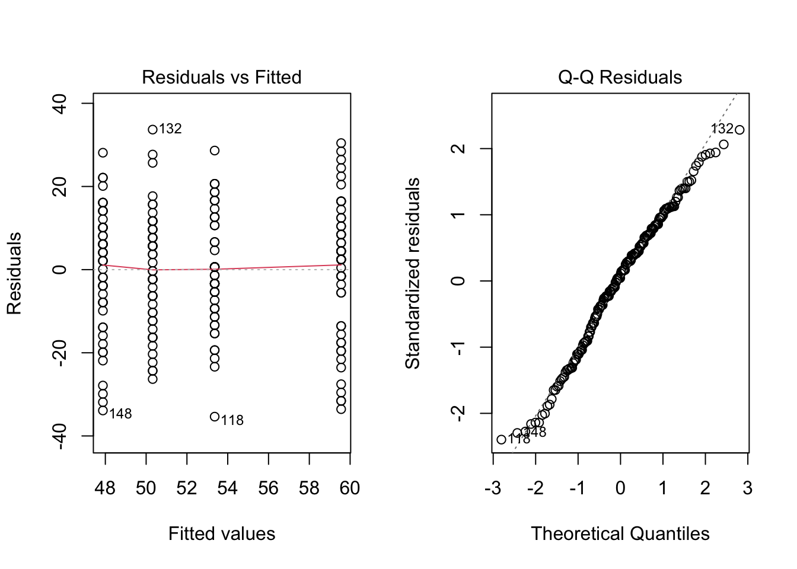
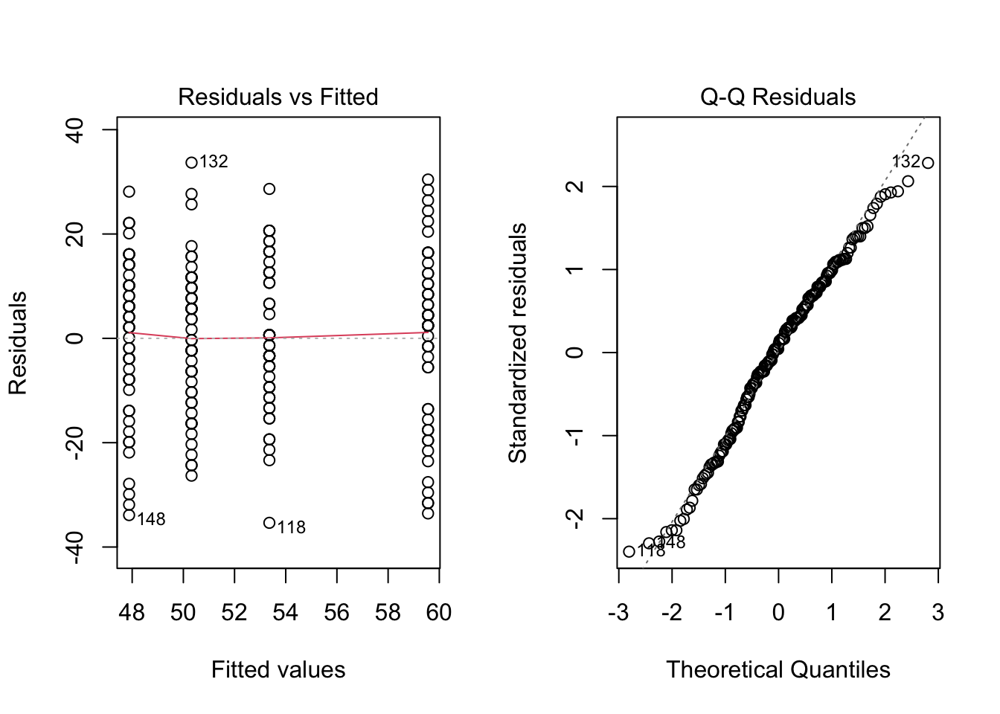
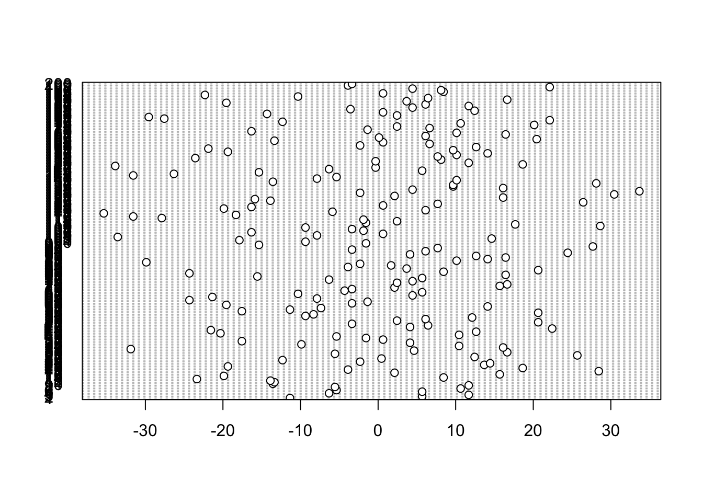

par(mfrow = c(1,2))
plot(model, which = 1)
plot(model, which = 2)
The model for a factorial experiment with two treatment factors was:
\[ Y_{ijk} = \mu + A_i + C_j + (AC)_{ij} + e_{ijk} \]
If we move \(\mu\) to the left-hand side of the equation, we get:
\[ Y_{ijk} - \mu = A_i + C_j + (AC)_{ij} + e_{ijk} \]
Now, each of the terms on the RHS is a deviation from a mean.
We can square and sum the corresponding observed deviations and obtain sums of squares. For a balanced factorial experiment, the total sum of squares on the LHS can be split into four parts, corresponding to:
\[ SS_{total} = SS_A + SS_C + SS_{AC} + SS_E \]
The degrees of freedom for these sums of squares are:
\[ abn - 1 = (a - 1) + (b - 1) + (a - 1)(b - 1) + ab(n - 1) \]
where \(n\) is the number of replicates per treatment. The degrees of freedom on the right-hand side add up to the total degrees of freedom. Once again, we summarise all this in a table.
The following table summarizes the partitioning of variation:
| Source | SS | df | MS | F |
|---|---|---|---|---|
| A Main Effects | \(SS_A = nb \sum_i (\bar{Y}_{i..} - \bar{Y}_{...})^2\) | \((a - 1)\) | \(MS_A\) | \(\frac{MS_A}{MS_E}\) |
| C Main Effects | \(SS_C = na \sum_j (\bar{Y}_{.j.} - \bar{Y}_{...})^2\) | \((b - 1)\) | \(MS_C\) | \(\frac{MS_C}{MS_E}\) |
| AC Interactions | \(SS_{AC} = n \sum_{ij} (\bar{Y}_{ij.} - \bar{Y}_{i..} - \bar{Y}_{.j.} + \bar{Y}_{...})^2\) | \((a - 1)(b - 1)\) | \(MS_{AC}\) | \(\frac{MS_{AC}}{MS_E}\) |
| Error | \(SS_E = \sum_{ijk} (Y_{ijk} - \bar{Y}_{ij.})^2\) | \(ab(n - 1)\) | \(MSE\) | - |
| Total | \(SS_{total} = \sum_{ijk} (Y_{ijk} - \bar{Y}_{...})^2\) | \(abn - 1\) | - | - |
There are three F-tests in this ANOVA table.
The alternative hypothesis is, in each case, that at least one of the parameters considered is non-zero.
While discussing interactions, we saw that sometimes, with strong interaction effects, the main effects of a factor may disappear (be close to zero). But this does not mean that the factor has no effect. On the contrary, it has an effect on the response; the effects just differ over the levels of the other factor and may average out.
Therefore, we usually start by testing the interaction effects. If there is evidence for the presence of interactions, we have to examine the main effects with this in mind, i.e., be careful with the interpretation of the main effects. Some people say that it becomes meaningless to test for main effects if there is evidence of interactions. However, this depends on what we want to know. The main effects still tell us whether or not the average response changes with changing levels of the factor.
The F-ratio always has the mean square for error in the denominator. As before, it is a ratio of two variance estimates, and in each case, it can be seen as a signal-to-noise ratio: how large are the effects relative to the experimental error variance?
Before we inspect the ANOVA table for the working example, we need to check the assumptions about the erros after model fitting. We do this by inspecting the residuals.
par(mfrow = c(1,2))
plot(model, which = 1)
plot(model, which = 2)
There are no clear violations, in the first plot, the residuals appear to be centered around zero and the spread is reasonably equal across groups. The second plot is a Q-Q plot of the residuals which shows nothing worrisome. Remember we can also plot a histogram of the residuals to check normality.
For the independence assumption, we construct the dot chart once again but with the residuals.
dotchart(model$residuals) # note the different way of extracting residuals!
The y-axis is messy but we can ignore that, it shows the index of each observation and there are 200 hence why it overlaps so much. The residuals look uniform, there are no systematic patterns or trends in the plot.
Let’s see what the ANOVA table looks like for our working example.
summary(model) Df Sum Sq Mean Sq F value Pr(>F)
Speed 1 933 933.1 4.201 0.041724 *
Content.Type 1 2708 2708.5 12.195 0.000592 ***
Speed:Content.Type 1 177 176.7 0.796 0.373485
Residuals 196 43532 222.1
---
Signif. codes: 0 '***' 0.001 '**' 0.01 '*' 0.05 '.' 0.1 ' ' 1Verify that the degrees of freedom are what you expected! First, we look at the interaction. Th F-value is quite small which leads to a large p-value of 0.37. This means that we really have no evidence against the null hypothesis that the factors interact. There is some evidence for a man effect of Speed but there is much stronger evidence as indicated by the small p-value for a main effect of lecture modality.
There are two approaches to analysing data from experiments. The first is to construct a set of a-priori contrasts, test these, and perhaps afterwards use unplanned comparisons to see if there are any other interesting treatment effects or differences that we might want to follow up with in a future experiment.
The second approach is an analysis of variance (ANOVA). This usually tests much more general hypotheses about the presence of main and interaction effects. The two approaches are not mutually exclusive, but if the questions we are interested in are not answered by an analysis of variance, we should concentrate on the contrasts. The two approaches may also give what seem to be different answers.
For example, from the ANOVA F-test, we may see no evidence for interactions, but if we look at specific contrasts for interactions, there is evidence. This can happen; it is not a mistake in the methods, it is just a difference in the hypotheses that are being tested.
Often, an ANOVA is expected in journal publications and research reports, even if it does not answer the specific research questions. The more specific questions are answered by constructing confidence intervals or tests for contrasts.
Let’s revisit the specific research questions for the working example:
With these question, conducting an ANOVA is enough. We simply want to know if there are any main effects or interaction effects. We have answered that with the ANOVA above. But what if the questions were a bit more specific:
So far we have only contrasted two treatments. Sometimes we want to compare groups of treatments to one another. More generally, a contrast is defined as a linear combination of the parameters where the coefficients add up to zero:
\[L = \sum_1^a h_iA_i\]
such that \(\sum_1^a h_i = 0\). This ensures a fair comparison. For example, in a compairson of two group means we have:
\[ L = \mu_1 - \mu_2 = 1\times \mu + (-1) \times \mu_2\] Here, the coefficients are \(h_1 = +1\) and \(h_2 = -1\) which sum to zero. This simple difference is the simplest form of a contrast. Effectively, \(\sum_1^a h_i = 0\) represents the null hypothesis, that the difference equals 0.
Let’s start with the first question. Remeber the treatments were:
To answer the first question, our contrast should compare Audio-Visual vs. Audio-Only and we do this by averaging over the levels of playback speed.
First we compute the average response for the two levels of content type, AV and AO.
\[\frac{(\mu_{1AV} + \mu_{2AV})}{2}\]
\[\frac{(\mu_{1AO} + \mu_{2AO})}{2}\]
Now we are comparing groups of means. The first group contains the means for all treatments that included Audio-Visual level and the second contains the Audio-Only level. We are asking whether the AV level increased comprehension. So we are testing:
We could specify the difference either way, that is AO - AV. Then we would be doing a one-sided lower tailed test.
\[H_0: \frac{(\mu_{1AV} + \mu_{2AV})}{2} = \frac{(\mu_{1AO} + \mu_{2AO})}{2}\]
\[ H_1: \frac{(\mu_{1AV} + \mu_{2AV})}{2} > \frac{(\mu_{1AO} + \mu_{2AO})}{2} <=> \frac{(\mu_{1AV} + \mu_{2AV})}{2} - \frac{(\mu_{1AO} + \mu_{2AO})}{2} > 0 \]
The coefficients of the contrast sum to zero:
\[ \begin{aligned} &\frac{(\mu_{AV1} + \mu_{AV2}) - (\mu_{AO1} + \mu_{AO2})}{2} \\ &\frac{(1) \mu_{AV1} + (1) \mu_{AV2} + (-1) \mu_{AO1} + (-1) \mu_{AO2}}{2} \\ & (0.5) \mu_{AV1} + (0.5) \mu_{AV2} + (-0.5) \mu_{AO1} + (-0.5) \mu_{AO2} \\ &0.5+.0.5-0.5-0.5 = 0 \end{aligned} \] This is a linear combination of the model parameters. What does the contrast and coefficients look like for the second question? To test whether playback speed decreases comprehension, we need to compare treatments at 1x speed vs. 2x speed:
\[\frac{(\mu_{1AV} + \mu_{1AO})}{2} - \frac{(\mu_{2AO} + \mu_{2AV})}{2}\] The coefficients sum to zero as before. This might be confusing but we are simply grouping treatments together and comparing them. To compute these contrasts in R, we first fit the model using lm() and extract the treatment means using emmeans from the emmeans package.
model_reg <- lm(Accuracy ~ Content.Type * Speed, data = data)
means <- emmeans(model_reg, ~Content.Type * Speed)
means Content.Type Speed emmean SE df lower.CL upper.CL
Audio-Only 1 50.3 2.11 196 46.2 54.5
Audio-Visual 1 59.6 2.11 196 55.4 63.7
Audio-Only 2 47.9 2.11 196 43.7 52.0
Audio-Visual 2 53.4 2.11 196 49.2 57.5
Confidence level used: 0.95 The emmeans function returns the treatment means, the standard error, degrees of freedom and the bounds of 95% confidence interval. Now we want to perform the two contrasts using the means saved in the object we created, means. First, note the order in which emmeans outputs the treatments:
AO1, AV1, A02, AV2.
We are going to use this order and the coefficients were determined earlier to perform the ocntrasts with the function contrast() also from the package emmeans:
contrast(means,
list(
c1 = c(-1,1,-1,1)/2, # AV - AO
c2 = c(1,1,-1,-1)/2 # 2x - 1x
),
by = NULL, side = ">") contrast estimate SE df t.ratio p.value
c1 7.36 2.11 196 3.492 0.0003
c2 4.32 2.11 196 2.050 0.0209
P values are right-tailed We supply the emmeans object means and then a list of contrasts we call c1 and c2 corresponding to the first and second question. Each contrast consists of the coefficients in the order in which the means appear in the means object and the scaling by 2. Then we need to specify by = NULL because we have manually coded the contrasts and don’t need to specify by which factor the contrasts should made. Lastly, we specify the type of test we want, that is, is it one sided or two sided. If it is one-sided, in which direction? We have specifically constructed the contrasts so that both are “one-sided greater than”.
The output shows the estimate of each contrast, the standard error of the difference in means, t-value and associated p-value. For the first contrast we see the difference in comprehesion scores between the Audio-Vsual and Audio-Only groups was 7.36, this means that the avearge response in the Audio-Visual group was higher than the average response in the Audio-Only group. We see that the p-value to test this contrast is 0.0003 which is extremely small, so it is unlikely that the difference in mean response is due to chance. There is strong evidence to indicate that the audio-visual type increased the mean response, the estimate of this the difference between groups is 7.36% (\(t=3.492\), \(df = 196\), \(p = 0.0003\)).
For the second contrast, the p-value still provides sufficient evidence against the null hypothesis that the difference is zero but it is not as strong as for the first contrast. However, we are still satisfied with the evidence against \(H_0\). The 2x speed decreased the average accuracy (averaged over the levels of content type) by 4.32% (\(t=-2.050\), \(df = 196\), \(p = 0.021\)).
When we have factors with two levels (as we do here) and we conduct two sided contrasts, then the contrast is equivalent to testing for the presence of main effects which what the ANOVA table does! Remember we said that the ANOVA is an extension of the t-test and with two levels. Let’s go through this step-by-step:
Since we conducted one-sided tests, the p-value is has been split between the tails. To get to the value of the p-value for a two-sided tests, we multiply the one-sided p-value by 2.
# For AV - AO = 0
0.0003*2[1] 6e-04# For 1 - 2 = 0
0.0209 * 2[1] 0.0418Check that these are the same as in the ANOVA table. The test statistics are also related in this case, \(t^2 = F\).
Let’s answer the third question. Since we have two levels per factor, this question is asking about the interaction. The contrast for the interaction should compare the difference between audio-visual and audio-only in the two levels of playback speed:
At 1x playback speed, the effect of content type is given by:
\[ (\mu_{AV1} - \mu_{AO1}) \]
At 2x playback speed, the effect of content type is given by:
\[ (\mu_{AV2} - \mu_{AO2}) \]
Now to examine whether the effect of content type is consistent across playback speeds, we compute:
\[ \begin{aligned} &(\mu_{AV1} - \mu_{AO1}) - (\mu_{AV2} - \mu_{AO2})\\ & = \mu_{AV1} - \mu_{AO1} - \mu_{AV2} + \mu_{AO2} \end{aligned} \]
This contrast assesses whether the difference between Audio-Visual and Audio-Only is the same at 1x and 2x speeds.
We are not dividing by two because we are not averaging across conditions, we are computing the difference of two differences.
contrast(means,
list(
c3 = c(-1, 1, 1,-1) # interaction
),
by = NULL) contrast estimate SE df t.ratio p.value
c3 3.76 4.22 196 0.892 0.3735We get the same p-value as in the ANOVA table which indicates a lack of evidence against the null hypothesis, there is no evidence to suggest that the two factors interact (\(t=0.892\), \(df = 196\), \(p = 0.374\)).
In practice, we would test the interaction first and then interpret the main effects if there is evidence to support their presence. Here we have done it this way around purely for educational purposes.
Let’s pretend we found a small p-value suggesting that the factors do interact. How would we interpret this interaction? Now, it is useful the construct the interaction plot we saw before!